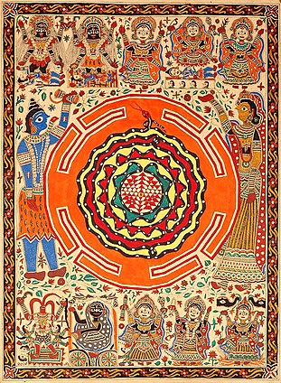

BIHAR

Madhubani painting (Mithila painting) was traditionally created by the women of various communities in the Mithila region of the Indian subcontinent. It originated from Madhubani district of the Mithila region of Bihar. Madhubani is also a major export center of these paintings.[1] This painting as a form of wall art was practiced widely throughout the region; the more recent development of painting on paper and canvas mainly originated among the villages around Madhubani, and it is these latter developments that led to the term "Madhubani art" being used alongside "Mithila Painting.